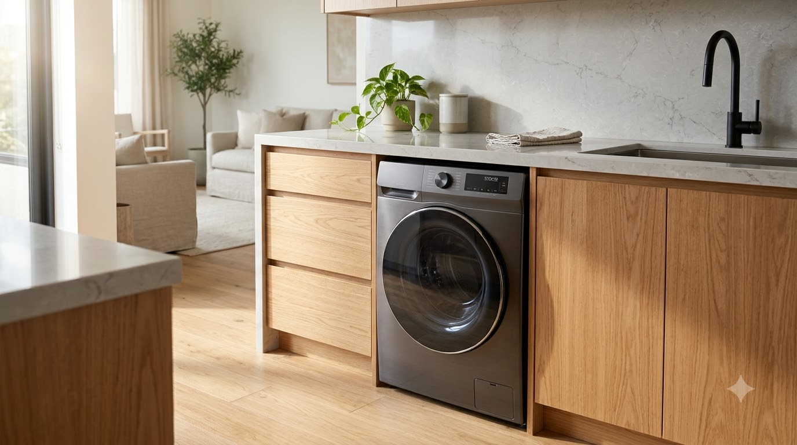
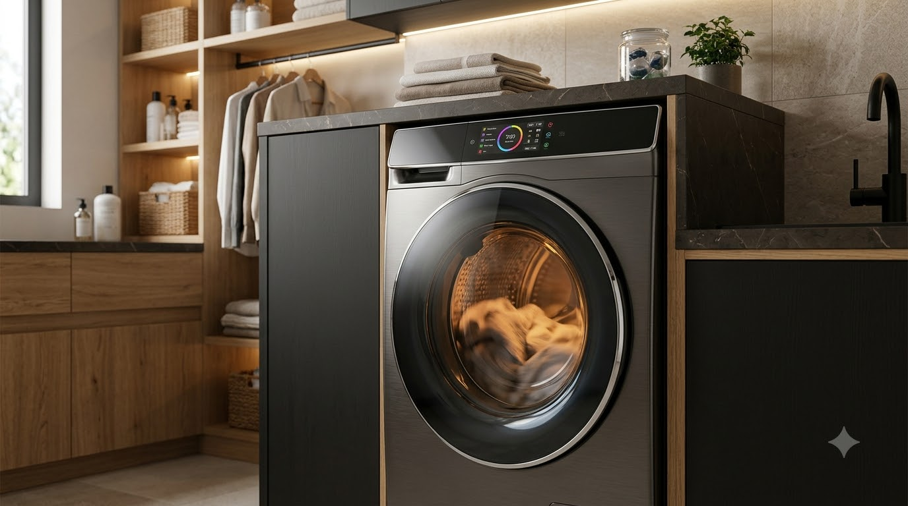

APPLIANCE CATEGORIES IN RESIDENTIAL CARE
Understanding the unique engineering considerations behind different household washing machine designs.
 Front Load
Front Load
Front-Load Machines
Horizontal drum orientation using gravity tumbling. Focus areas include door boot bellows, front counterweights, and drain pump filters.
Category Scope → Top Load
Top Load
Top-Load Machines
Vertical axis drum units with central pulsator or agitator vanes. Focus areas include 4-point suspension rods and lid interlock switches.
Category Scope → Fully Automatic
Fully Automatic
Fully Automatic Units
Single-button automated cycle management governed by electronic controller boards, pressure level switches, and digital thermal sensors.
Category Scope → Semi-Automatic
Semi-Automatic
Semi-Automatic Units
Dual-tub manual transfer machines equipped with mechanical wash timers, capacitor start circuits, and gravity-fed drain valves.
Category Scope →
CompactCompact Washing Machines
Space-efficient appliances designed for studio apartments and under-counter installations requiring precision vibration dampening.
Category Scope →
Combo UnitWasher-Dryer Combos
Integrated single-drum condensing units combining wash agitation with heated drying cycles and specialized condenser lint flushes.
Category Scope →